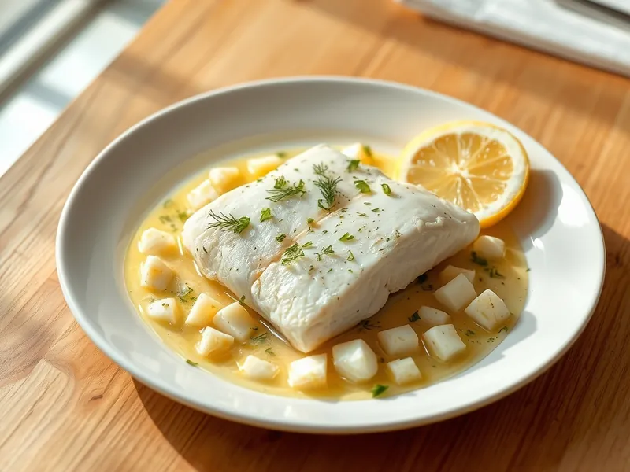

Фото: Иллюстрация ИИ, Cloudflare Workers AI
Рыба по-польски
Отварной хек под соусом из сливочного масла, рубленых яиц и укропа
25 мин3 порц.340 ккал на порциюБ 33 · Ж 22 · У 3Европейская кухня
Продукты на 3 порц.
- Хек500 г
- Яйцо куриное2 шт
- Сливочное масло50 г
- Укроп0,5 пучка
- Лук репчатый0,5 шт
- Морковь0,5 шт
- Лавровый лист1 шт
- Лимон по желаниюпо вкусу
- Вода1000 мл
- Соль1 ч. л.
Как готовить
- Сварите яйца вкрутую 10 минут, остудите в холодной воде и мелко порубите.
- Вскипятите воду с луком, морковью, лавровым листом и солью.
- Опустите куски хека в кипящий отвар, убавьте огонь до слабого и варите 7-8 минут, пока рыба не станет белой и не будет легко расслаиваться.
- Растопите сливочное масло, смешайте с рублеными яйцами и укропом, добавьте 2-3 ложки рыбного отвара и сок лимона.
- Выложите рыбу на тарелки и полейте яичным соусом.
Совет. Рыбу варите при едва заметном кипении: на сильном огне она разваливается и становится сухой.